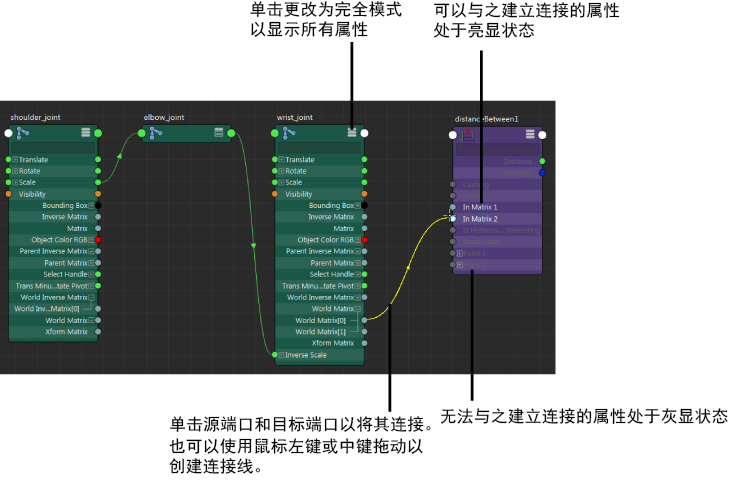
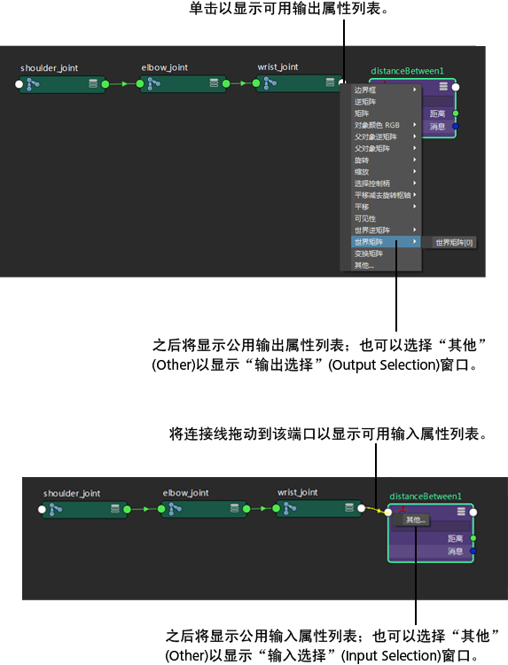

方法 1
使用连接线连接属性
- 在“节点编辑器”(Node Editor)中，单击每个节点右上角的
 图标以将其展开至完全模式。
图标以将其展开至完全模式。
- 单击源端口，然后单击目标端口以将其连接。
或者，可以使用鼠标中键或鼠标左键进行拖动，在输出属性和输入属性之间创建连接线。
使用搜索（过滤器）字段，可以轻松地查找特定属性。在自定义模式（模式 4）下，默认情况下隐藏过滤器字段。单击
 可显示它。
可显示它。
若要释放连接线，请在图表的任意空白区域上单击鼠标左键，或按 Esc 键。
如果将鼠标悬停在复合属性上，“节点编辑器”(Node Editor)将自动展开以显示可以连接的子项。
将鼠标悬停在可用的输入上方时，所有可以接收连接的输入都将亮显。这表示可以与该输入建立连接。
所有无法接收连接的输入都将灰显。这表示连接不可用。
此外，还将捕捉到可以连接的端口。这样，能够轻松标识可以连接到的属性。

提示： 连接复合属性（例如，颜色为父属性，而颜色 R、G、B 为子属性）时，如果在子属性（例如，颜色 R）已连接的情况下尝试连接到父属性（颜色），则将断开到子属性的连接。
方法 2
连接属性而不展开节点
- 单击节点的输出主端口，以显示可用输出属性的菜单。此时会显示公用输出属性的列表；或选择“其他”(Other)以显示“连接编辑器”(Connection Editor)、“输出选择”(Output Selection)窗口。从该窗口中，可以选择输出选项。
- 将连接线拖动到接收输入连接的节点的输入主端口。此时会显示公用输入属性的列表；或选择“其他”(Other)以显示“输入选择”(Input Selection)窗口。从该窗口中可以选择输入选项。
注： “输入选择”(Input Selection)窗口仅允许选择与之前选定的输出属性兼容的属性。
